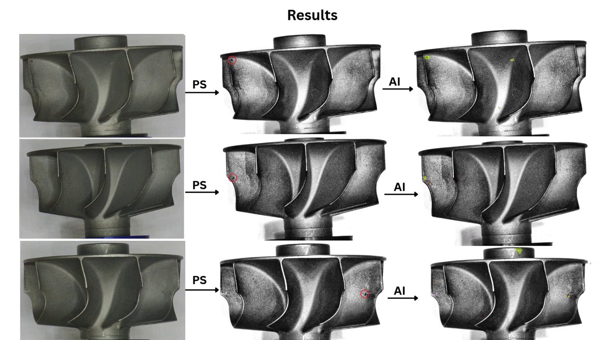
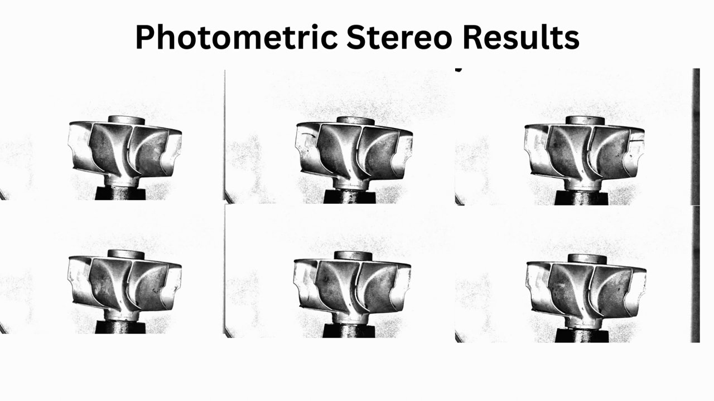
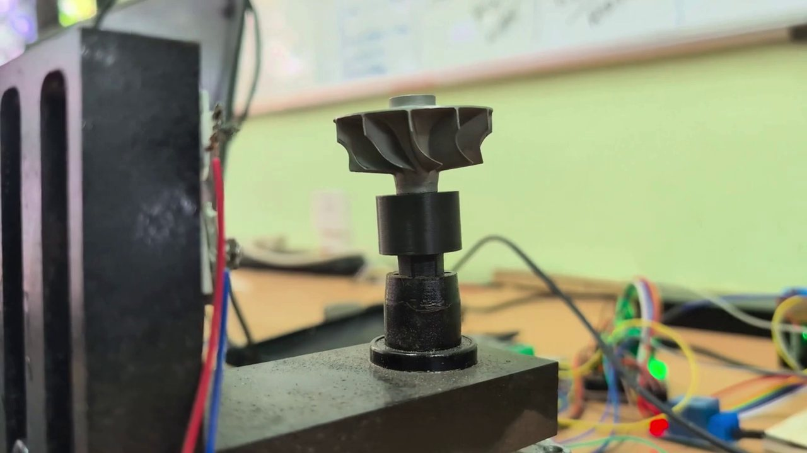

The idea
Use the direction of the light. Photographing each blade under lights from several directions recovers the shape of its surface, where a shallow defect shows. Each detection is then placed on the part's CAD model, which gives its position on the blade and its size in millimetres.
1Background
The part is a cast impeller with nine blades. Under diffuse light the rough cast surface and a shallow defect look alike.
The cell was specified against two targets: a line takt of 10 to 15 seconds per part, and a minimum actionable defect of 0.1 mm. It also had to run on the client's premises.
2What I built
Capture. The prototype uses a smartphone camera, a ring of lights and a rotary fixture that presents the impeller blade by blade. For each view the camera takes several images, each lit from a different direction. Every lighting and view combination is denoised frame by frame before it is used.
Photometric reconstruction. Photometric stereo recovers the surface from how its brightness changes with the direction of the light. The outputs are albedo (the surface's own reflectance), surface normals, signed relief and curvature. As one of the project slides puts it, features invisible in diffuse images get better visibility in the photometric versions.
Registration to CAD. Detections are registered to the part's CAD model. The acceptance region and the object-space scale then come from geometry rather than appearance: the system knows which part of the blade a detection lies on and how large it is in millimetres.






3Where it stands
| Design target | Value |
|---|---|
| Line takt | 10 to 15 s per part |
| Minimum actionable defect | 0.1 mm |
| Deployment | On-premise |
The cell is specified and prototyped. Qualification is planned as a probability-of-detection study that reports a90/95, the defect size detected 90% of the time with 95% confidence, by defect class, size boundary and region of the part.
4What came next
Two things held the prototype back. There were only a few sample wheels with real defects, too few to train or test a detector properly. And a detection on its own does not tell the factory whether to accept the part: that depends on where the defect is, how big it is, and which standard applies. My current research takes on both. It generates defective parts from CAD in any number, and writes the acceptance standard as rules attached to regions of the CAD model.